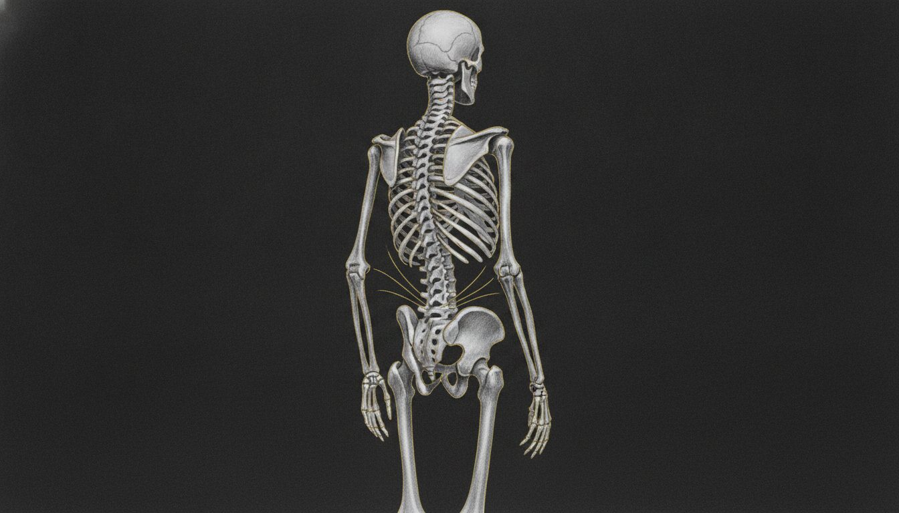

Spend time around professional sports and you'll notice something: the best performance staff don't talk about muscles in isolation. They talk about chains. How force moves through the kinetic system. How restriction in one segment changes loading in another. How a player's movement on film reveals compensations that never show up on a standard physical.
At the highest level of sport, the pelvis has stopped being an afterthought. It's being treated as what it actually is — the center of the machine.
When an NBA trainer changes how he thinks about the body
Taka, Assistant Athletic Trainer for the Atlanta Hawks, came to LINK Pro already fluent in every treatment modality professional basketball has to offer. What he found here was different — not a new technique to add to the toolbox, but a framework that reordered how he understood the athletes he worked with every day.
"Jason brought a depth of anatomical knowledge that really stood out. He didn't just review structures — he connected them directly to specific techniques that can improve joint movement and function in our athletes. The clarity and precision in his teaching gave me new tools I can use right away to support performance and longevity on the court."
That response captures what pelvis-centered care actually delivers: not abstract theory, but anatomical precision that translates directly into how an athlete moves, loads, and recovers under the demands of a professional season.

What "pelvis-centered" actually means
It's not a branding phrase. At LINK Pro, pelvis-centered means the assessment starts at the architectural keystone of movement and builds outward through every system that connects to it.
Dr. Jason Amstutz — DC, CCSP, RTP, CSCS — developed this methodology over a career dedicated to understanding the body at its deepest structural level. His training under Guy Voyer, DO, one of the world's foremost osteopaths, shaped an approach that treats the body as the interconnected system it is: musculoskeletal, fascial, visceral, and neurological — all governed by the fluid dynamics and tensional relationships that define how we move.
A pelvis-centered assessment at LINK Pro evaluates:
- Pelvic mobility and stability — how the keystone moves under load and at rest
- Fascial chain continuity — whether restriction in the trunk, hip, or lower limb is limiting the whole system
- Spinal segmental health — often addressed through ELDOA postures that create targeted decompression
- Organ and diaphragmatic function — because internal mobility directly affects how the pelvis and spine organize
- Neurological stabilization patterns — the protective strategies the body has locked in over time
This isn't a longer checklist. It's a different lens — one that explains why two athletes with identical MRI findings can have radically different outcomes from the same rehab protocol.
Why generic protocols plateau
Most athletes have access to good physical therapy, competent chiropractic care, and a training staff that knows what they're doing. And yet the same injuries recur. The same tightness returns every off-season. The same movement inefficiencies show up on film year after year.
The issue usually isn't effort or expertise on the athlete's part. It's that generic protocols treat the body in categories — "hip flexor," "low back," "hamstring" — when the body operates in chains. A protocol designed for a hamstring strain doesn't account for the pelvic restriction that caused the hamstring to overwork in the first place. A spinal mobility program doesn't address the fascial adhesion in the trunk that's limiting the pelvis from finding neutral.
LINK Pro was built for athletes who've already done the conventional work and need the next level of specificity.
Concierge care means the doctor stays in the room
One of the most common frustrations we hear from elite performers is the feeling of being passed through a system — different practitioners each visit, treatment plans that don't evolve, sessions that feel templated rather than designed.
At LINK Pro, Dr. Amstutz personally architects every treatment plan and conducts every session. Extended appointment times. Direct access. Protocols that evolve session to session based on how your body actually responds — not how a flowchart says it should.
That model is why athletes from the NBA, NFL, and Olympic pipeline travel to Costa Mesa specifically for care. It's not convenience. It's precision that requires sustained, direct clinical involvement — the kind that only concierge-level practice structure makes possible.
From the pelvis out — not from the symptom in
Whether you're managing a recurring soft-tissue injury, returning from a concussion and trying to restore full movement quality, or simply trying to unlock performance that's been capped by restrictions you can't identify — the question is the same: are you building on a stable foundation, or training around a compromised one?
Pro teams are already asking that question. The athletes who get ahead of it don't wait for the injury to force the conversation.
See what your pelvis is telling you
Book a comprehensive assessment with Dr. Jason Amstutz at LINK Pro, Costa Mesa.
Book a Consultation